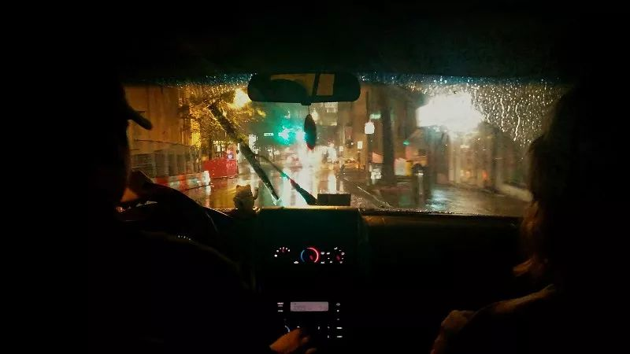
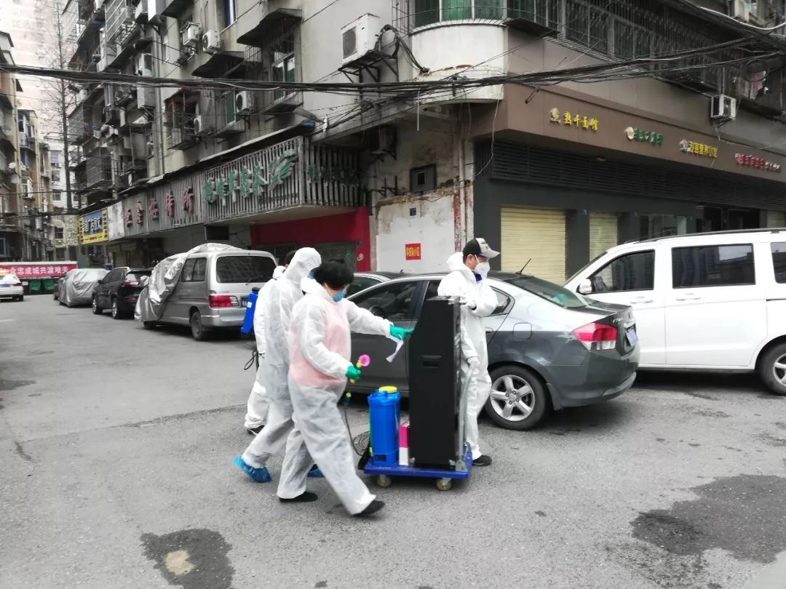
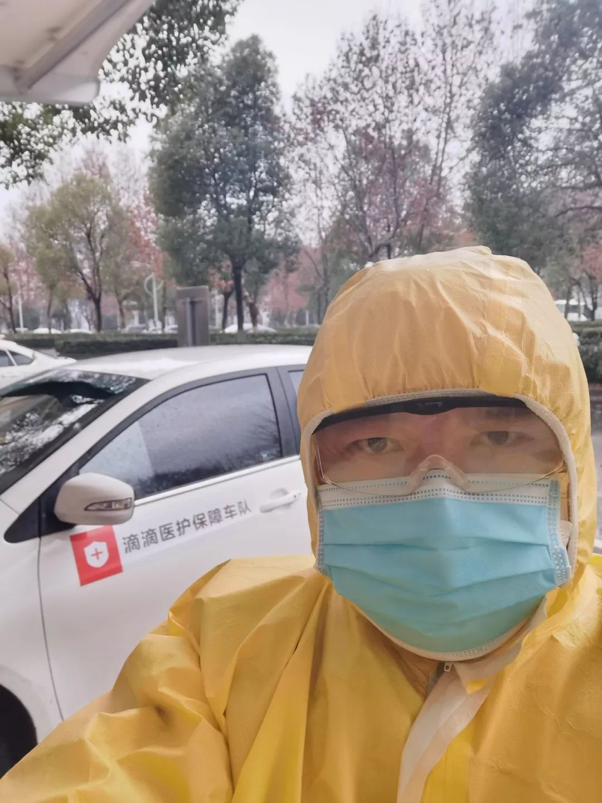
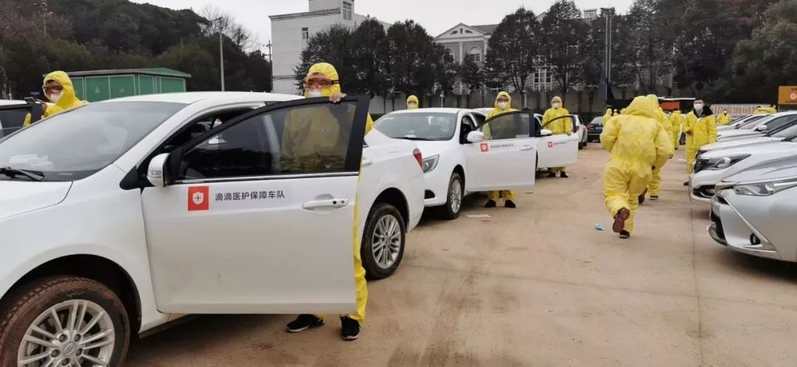
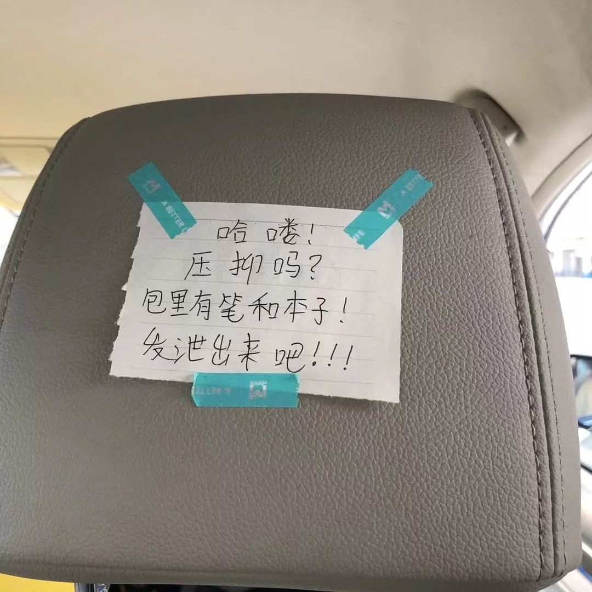

志愿接送医生的武汉司机：人可怜又渺小，我什么也做不了，只会开车
原文链接 备份链接 口述 黄晓民 采访 张瑾 联系到黄晓民时，已是 2 月 2 日晚上 8 点多，他刚协调完一批送给医院的物资回到家中。电话那头传来咳嗽声。 黄晓民，38 岁，南国地产的一名市场推广。1 月 23 日成立武汉 123 志愿 …

除了牛奶和饼干，司机的后座上常会捡到医生和护士们留下的礼物，有时候是一罐八宝粥，或者一枚珍贵的N95口罩。
文 | 林秋铭
编辑 | 金匝
1
如果没有这场疫情，今年春节，52岁的李明和他的妻子将会出现在希腊。这是他和妻子计划已久的旅行，两人提前买好了1月20日的机票，从武汉出发。18日那天，他们提前吃了年夜饭，他收到别人转来武汉疫情的消息，随即把机票退了，转身和妻子说，「你一个人去吧。」
他决定一个人留在武汉，为了这事儿，妻子到现在都还埋怨他。
李明的警惕不是没有来由。他是一名非全职滴滴司机，他想，如果武汉的疫情爆发，自己留下来一定会有帮助。2003年，他报名参加了非典抗疫的志愿者。那年春天，他驮着18斤的喷雾器到各个街道喷洒消毒药水。来回走4个小时，每天要喷4壶，他喷了3个多月。那时候防护设备还不齐全，他戴最普通的一次性口罩，穿的是一次性雨衣。「非典都参加过了，我还怕什么呢？」
和李明预想的一样，1月23日，武汉市内的公共交通停摆，各类平台的叫车业务下线，这个城市被强制按下了暂停键。封城后的一两天，有民间志愿者自发组建过车队接送市民，很快因为安全问题被叫停。
但情况严峻，医护人员上下班无车可乘，有报道指出，一些医护人员只能选择骑2小时的共享单车到值班的医院。另一个巨大隐患也在凸显，武汉各个定点医院清空非肺炎患者后，他们大多在家里服药或被转到偏远的医院，医疗资源被挤兑的同时，如果交通再遇到阻滞，他们将面临断药、中断治疗的风险。
为了解决「禁车」之难，23日封城当天，滴滴平台开始招募武汉当地的司机志愿者，分别负责社区和医院的「摆渡」工作，消息在平台上发出后，李明和另一位滴滴司机安飞在第一时间报了名。

李明
安飞比李明小14岁，他们和另外两位司机组成了一支社区保障队，负责接送社区里的非肺炎病人来往医院拿药打针、做透析治疗，以及为社区购置药物和蔬菜。武汉全市，和他们相似的，还有1000多名司机志愿者。
社区的工作人员会将消息转发到4位司机的群聊里，对他们分配相应的任务。李明记得，每次社区发来请求，他们4个人都同时在群里发「我去！」，像以前抢单似的，没有人犹豫。
「带一个病人去打针。」一次，李明接到社区的工作人员发来的消息。
他到了那里才知道，那是一位脑癌患者。她瘫痪了好几年，当时正处于昏迷状态，完全失去了意识，左半边身子是僵硬的，整只手臂都无法动弹。李明和她的丈夫配合着给她穿上了毛衣，把她抬下楼。
老房子楼道狭小，不过1米左右，无法并肩站人。楼梯也陡斜，如果用担架，病人很可能会从担架上滑下来。他们只好叫来了邻居和另一位司机，用床单将她整个人兜起，一人拉着床单的一角，一前一后地向下走，将140斤重的她慢慢腾挪到一楼的车里。一层楼的距离，4个男人走了近20分钟。
大年初一直到初十，李明每天都要重复这些动作。早晨9点钟接到这位病人，在医院门口等待她打完针，12点再开车接她回家。有一回，吊瓶挂了500毫升的量，比平时多了一倍。他们下车后，李明注意到座位上有一滩尿渍——病人小便失禁了。他默默用水清洗了尿渍，没有和她的家人提起这件事。「唉，怎么好意思说呢，人家是病人呀。」
南方人喜欢吃叶子菜，绿油油的青菜是超市里的抢手货，中午就卖得所剩无几。超市下午5点关门，李明5点30收车，他得在订单之间的缝隙里，抓紧时间去附近的超市排队抢菜，再送往社区。最多的时候，他抢了200多块钱的青菜，开心坏了。
比买菜更困难的是买药。刚封城的那几天，武汉的药房大多都歇业了，李明和他的车队不得不开车走遍了各个城区的药房，一家一家地询问。曾经为了某一种特定的处方药，他们4个人从清晨找到下午。

司机们在运送物资
2
1月24日的除夕夜，滴滴平台的程序员们也在同样的焦灼中度过。
得到封城的消息后，他们率先发起动作，前后用了31个小时，紧急上线了一套新程序，将它植入App后台。医务人员通过滴滴app就能自主完成叫车，并能实时看到车辆的位置。比起人工调配，效率快得多。截至2月9日，滴滴武汉医护专车已经接入了15家医院和25个院区，共接送了8600多名医护人员。
程序之外，是鲜活的个体。与李明、安飞共同维持武汉运转的，是另一支专门保障医护人员的车队，目前人数达到了200余人。他们被拆分为多支小分队，分别驻守不同的医院，接送医护人员上下班，费用由滴滴来承担。
胡建斌是其中一支分队的队长，他的队伍里一共有5台车，对接同济医院中法新城院区，那是一家收治肺炎危重病人的救治定点医院。
胡建斌的生物钟被完全打乱。每天，他至少会接10个左右的订单，为了接下夜班的医生和护士，他需要在凌晨1点左右蹲守在医院门口，3点到家入睡，7点起床继续送早班的医护上班。疲惫得不行，他就把车停在离医院2公里左右的位置，趴在方向盘上小小地打个盹。

胡建斌
医疗保障队里仅有2名女性司机，何明荣是其中一位。和胡建斌一样，她也是第一批报名接送医护人员的100位滴滴司机之一。
武汉封城之后，何明荣执意留了下来。她把儿子和丈夫支回了新疆的老家，独自一人在武汉跑车。留下来的司机中，她是为数不多的外地人。她一个人在出租屋里度过了除夕，公司给他们每人都发了「年夜饭」，那是一个番茄味的自热小火锅，「你看，公司多贴心，这个火锅是不辣的。」
前年，还是全职太太的她跟随上大学的儿子到了武汉居住。她笑自己只会开车，所以做了一名滴滴司机。「我喜欢武汉这座城市。以前开车，就是想多看看武汉的风景，去年我和儿子去看了武大的樱花，非常震撼。」她说，「但武汉被封以后，就完全变了样。」
何明荣在车里听到过不同的哭声。几天前，她接一位同济医院的护士下班。护士看起来二十出头，在路上，她接到了一通电话，边打边哭了起来。她告诉何明荣，电话那头是她的同事，一家四口有两人确诊，那位同事和婆婆住进了隔离病房，剩下丈夫和一个两岁多的孩子。现在，丈夫也出现了咳嗽发烧的症状。
「娃娃该怎么办呀？」护士哭得停不下来，她和同事都慌了阵脚。
何明荣劝她，「娃娃抵抗力好，先带他检查一下。你现在不能哭，要鼓励你的同事，她家里人都还很年轻，康复的可能性很大。」她劝完那位护士，自己扭头在护目镜下无声流泪。
一天早上10点，一位同样年轻的护士哭着坐进了她的车。那位护士才怀孕不久，丈夫和婆婆都回了老家，她留在武汉，继续在一线工作。前一天晚上，她上完夜班，一觉醒来，肚子莫名剧痛。她艰难地走下了楼，准备去妇幼保健院，却一直打不到车。
坐进何明荣的车，护士开始嚎啕大哭。「我不明白，这一切究竟是为什么？」何明荣劝了她两句，过了好一会儿，她才缓过来。后来，护士把眼泪擦了擦，带着哭腔自言自语，「我今天还要上夜班，等我白天检查完了，我得好好休息一下，吃个饭，才能上好夜班。」
何明荣扭过头，仔细端详了她的脸，那位护士不过才二十七八岁的模样。何明荣心疼她，「孩子，你有没有想过，疫情过去了，咱们不干这一行？」护士挂着一双朦胧的泪眼，摇了摇头。
「我那时候心想，她还都只是孩子，碰到这种大是大非，都能这么明事理。」何明荣说，「在这个环境里做司机，我听到太多故事了。一到晚上的时候，我都不能细想，不敢从头理一遍，太难了，太难了。」

何明荣
3
每天早晨5点，李明便起床了。武汉人讲究「过早」，他给自己煮了些饺子或面条，那是一天中重要的一顿，因为下一顿还不知道什么时候再能吃上。
车里弥漫着浓郁的消毒液的味道，穿戴上亮黄色的防护服和口罩，整个人像置身在一个蒸笼里，不断向外冒汗。他偶尔会开窗透透气，但过了一会儿又有些担心，赶紧把车窗摇上。
自从武汉开始大力建设地铁之后，堵车就成了这个城市撇不开的话题。但现在这个问题不复存在，街上已经没有多少行人和车，安静得只听见外头的雨水轻轻打在车窗上的声音。他是土生土长的武汉人，但从这个冬天开始，他对武汉有了些许陌生。
中午，社区保障队的司机可以回到社区的办公室，用方便面解决午饭这个难题。医护保障车队没有定点休息，只能在给车充电的间隙，边等着充电，边找热水泡面。20分钟电就能充满，他们要利用短暂的间隙，在狭小的驾驶座上把面吃完，暂时没有接到订单的时候，还能在后座躺上几分钟。
现在，留守在武汉的每个滴滴司机都害怕再看到泡面。不论是哪种口味的，闻到那股味道就反胃，但还是得吃。
滴滴公司定期向他们发放物资，包括防护服、口罩、一次性手套和消毒液。每次出车前，他们要花上近半小时对全车进行消毒，再套上防护服和手套，口罩需要戴两层，一次性口罩的外面罩着一个N95口罩。防护服里湿闷，口罩透不过气，但只能忍上整整一天。口罩上的绳子常把耳朵后根磨破，暴露的伤口让司机们心慌。
物资的紧俏始终是抗疫的共同痛点。滴滴公司在后方为一线司机四处求援，公司总裁柳青在微博上发出抗疫物资求助帖。不论是前线还是后方，都在竭力守卫着每一套防护服。无法预知下一次发放的时间点，司机们只能尽可能地节省。逼不得已的时候，一套防护服要穿上3天，用酒精喷过一遍后，放在后备箱里，下次接着穿。
防护服穿脱不方便，内层一旦接触到外部空气就会遭到污染。有一回，李明着急上厕所，「脱不赢」防护服，不得不尿在了防护服里。他后来有了经验，每天出车前只喝一杯水，尽量不去卫生间。
回一次社区就要洗一次手，每天近乎要洗上二三十遍。李明的手被洗得通红，长了不少冻疮。冻疮破了，冲冷水的时候生疼。和李明相反，安飞的手泛着不同寻常的雪白，他有时着急出任务，没来得及戴手套，只能干完活再用酒精消毒。因为长期直接接触酒精和消毒液，原来粗糙坚硬的双手被泡得柔软，干巴巴的，没有血色。

滴滴司机们在运送物资
4
除了物资和工作上的难，司机们还需要承担更多的苦。高压的环境里，心中的压力与日俱增。「现在的武汉就在生死边缘，没有那么多考虑的东西，大家无非就是默默地干。」胡建斌说。
接受采访那天，他才送完一位医护人员，把车停在小区的停车场里，又有另一位队员找他拿物资，他急着把车开出去，没想到在小区花坛的拐角，一不留神，撞了。
车子右边的后轮撞落了花坛的一大块瓷砖，车身被刮出近半米长的划痕。那条划痕成了压垮胡建斌的一根小小稻草，他在电话里语气激动，「你知道吗？我们小区不到25栋楼，已经有10个确诊，都没能住进医院，我那个单元就有一个。你有没有在网上看到一个叫做何辉的志愿者？他以前是我的领导，都是朝夕相伴的人啊，几天就没了，孤零零地一个人走了，火化的时候旁边没有一个人。根本没有什么感同身受，你明白吧？」
他变得越来越谨慎。过去几天，他在地下室停好车，会把护目镜和防护服悉数脱下再上楼。现在，他开始担心了，什么也不敢脱下，就穿着这么一身鼓鼓囊囊的衣服走回家。
开车走过武汉的街头，他想起自己曾经读过一本法国作家写的书，名叫《垂直的国度》，「武汉有那么多高楼，就和书里写的一样，每一栋都是垂直的街道，都在向外散发着病毒。」
面对这些压力和恐惧，胡建斌的方法是「打碎了牙，往肚子里咽」、「要让别人看到正向的一面」。医护人员开了车门，他就转过身，冲他们喊一句，「加油啊」，这是他的例行告别。
报名了这次志愿者活动，安飞已经十多天没有和家人好好相处过了。他把妻子和孩子安排到了妻子的娘家，每天只有一次见面的机会。下午下班以后，安飞把车停在路边，妻子把做好的饭菜放在饭盒里，递给他，过程不过几秒。「家里有小孩，有老人，我怕万一把病毒带给他们的话，就不知道去照顾谁了。」
孩子只有4岁大，以前安飞出完车下班回家，总会抱一抱他。现在，他只能在视频里逗逗他。前天，他和妻子念叨：「我半个月都没有抱他了。」
「我家里也有亲人确诊去世了，那天他走了之后，我突然意识到自己真的在做一件危险的事。可是总是还要有人去做啊，要是都不出来的话，社区里那些病人怎么办呢？我们不能让他们直接等死，对不对？」安飞说。
李明和安飞所在的车队，原来共有5个人。偶然，安飞联系到那位离开的司机，才知道他已经被隔离了。闲聊中，他对安飞说，「当时接了一个老太太，没有发烧和任何异状，也没说有病，但过了3天，那老太太就因为新冠走了。」安飞听完，心里一惊，「我当时想，完了，谁知道下一个乘客有没有病呢。」安飞说，「我现在只庆幸一件事，我没有接触过我的家人，即使有病毒，到我为止就好了。」
比起自己，安飞更担心李明师傅。李明长期患有高血压和糖尿病，虽然他会随身带着这些药片，但安飞知道，有基础疾病的人，感染新型冠状病毒肺炎后，病症会更加凶猛。身边的人劝李明别做了，他一一婉拒。「我觉得我身体没问题的，」像他曾经参加的非典一样，「我会坚持到疫情结束的那天。」

滴滴社区保障车队
5
疫情发生的当下，1300多位滴滴司机的后座上承载着太多的情绪。
一名护士在车里倾吐自己的无助，独自照顾6个床位的病人已经让她备感吃力，现在又被增加了2个床位的工作量。另一名护士半开玩笑地说起自己第一次值班的窘态，她不熟悉那些器械，手忙脚乱，和病患沟通，平缓他们的情绪，也耗尽了她的精力。但更多时候，司机们会看到医护人员沉默地瘫坐在后座上。
「我把车开慢一点，你可以眯一下。」李明做完社区的工作，也会帮忙着接一些医院的单子。他只能用这样的方式，安抚那些累坏了的医生和护士。
他对一位曾姓医生印象很深。在李明接送他上下班之前，曾医生靠自己的腿足足走了三天的路。他所在的武汉市第三医院和社区距离7公里，他走得慢，每天要徒步走3个小时。大年初四，曾医生无法坚持下去，只好打电话给了社区，请李明帮忙。
李明问他，「你需要车的话，为什么不直接和我们说呢？」「我不好意思和你们说，不想麻烦你们，但我实在是走不动了。」曾医生苦笑。偶尔碰面，他总会给李明塞些牛奶和饼干，向他解释，是「医院发给他们的」。李明知道，曾医生对他说了谎，牛奶是8盒一个的礼品包装，一定不是医院送的。
除了牛奶和饼干，司机的后座上常会捡到医生和护士们留下的礼物，有时候是一罐八宝粥，或者一枚珍贵的N95口罩。
沉默的城市里，关怀也是悄然的。
何明荣几乎没见过车队的其他同伴。她称他们为「兄弟」，只记得他们的名字和头像，会偶尔闪现在群聊里。但是他们有各自打招呼的方式，在外出车的时候，如果看到车上贴着滴滴的标识，她会按上一喇叭。对方也会回一声喇叭，以示问好。然后，两辆车又在下一个路口分离，驶向不同的街道。
他们车上备有84消毒液，但没有酒精。偌大一个武汉，哪里都买不到酒精了。有一次，她记不清是哪个兄弟弄来了一矿泉水瓶的酒精，就在群里吆喝「我这儿搞到了一点酒精，在XX地点，你们快过来取。」路过的司机就拿着随身携带的小喷壶去分，大家都只敢接几十毫升，不敢接多，酒精太珍贵，要留给其他兄弟。
每晚到家后，她要在群里发一句「到家了」报平安。这一群没有打过照面的司机们约好，疫情结束后，要出来好好吃个饭。
滴滴公司为这些前线的车队兄弟们筑好了防护的后盾，从2月11日起，滴滴在武汉等地试点，在网约车的车内装上了防护隔离膜，为网约车带上一层口罩。看上去，就像给司机罩上了一个透明的防护舱。
他们向医护人员和专业人士请教过，在车内加装塑料隔离膜可行性较高，一定程度上可以防止飞沫传播。滴滴在公开发布的声明里承认，这是「特殊时期的笨办法，甚至有点简陋」，但「愿意尝试多种可能」，保护一线司机。

车内的防护隔离膜
作为车队长的胡建斌说话直爽，他对队员的关怀来得有些粗暴。一位护士在车上和他闲聊，在同济医院中法新城院区有司机没有穿防护服、戴护目镜。他气坏了，「中法新城院区是收治危重病人的，医护都是极高危人群。我们还要接其他医护人员，要是不保护好自己，把其他人感染了怎么办？」
他急得在群里发消息，警示其他司机：「我们是次高危人群，一定要高度注意自身防护措施。」他在最后说，「我们医护保障首发战队，一定要做到零感染、零伤亡，全胜归来！！！」发出的消息占了满屏，这两句只是其中的节选——他急切地想保护好车队里的兄弟。
「医护队员200多人，社区服务队还有1000多号人。我不想说自己多英雄，我只是群像中的一个，只能是群像。」胡建斌说。
2月8日那天，胡建斌发了一条朋友圈，将车队兄弟的名字一一写上——「我们没有英雄事迹，只有行驶的轨迹。多年以后请记住这些普通的名字：曹畅、黄飞、童亮、刘金鑫、何明荣、刘青洲、係金玉、黄腾飞、周义凯、周世钧、宗涛、刘树成、刘邱斌、王有为、别华容、李亚平、董浩、毛腾……」

车内的椅背上的贴纸
没看够？
长按二维码关注《人物》微信公号
更多精彩的故事在等着你

原文链接 备份链接 口述 黄晓民 采访 张瑾 联系到黄晓民时，已是 2 月 2 日晚上 8 点多，他刚协调完一批送给医院的物资回到家中。电话那头传来咳嗽声。 黄晓民，38 岁，南国地产的一名市场推广。1 月 23 日成立武汉 123 志愿 …
原文链接 备份链接 武汉春寒料峭，疫情仍在蔓延。但也因为抗击疫情，本不相识的司机和医生之间，达到了前所未有的默契。“谢谢”和“加油”，是他们每次相遇和分开的标记 文 |《财经》特派武汉记者 刘以秦 编辑 | 谢丽容 图1: 在路上的爱心司 …
原文链接 备份链接 作者 | 相欣 编辑 | 康晓 出品｜深网·腾讯小满工作室 欢迎下载腾讯新闻APP，阅读更多优质资讯 编者按：通过湖北各城普通民众的视角和抗疫行动，记录这一段我们永不会忘记的历史。是为抗疫日记系列之二，来自武汉支援医护 …
原文链接 备份链接 27.01.2020本文字数：1459，阅读时长大约2.5分钟 导读：“我生活在武汉，我热爱武汉。只有城市健康了，我们居民才会有舒适的小日子。” 作者 | 第一财经 刘佳 清晨6点的武汉，天还没亮，身穿黄色防护服、戴 …
原文链接 备份链接 同力协契 共克时艰 武汉“封城”已三周，新冠肺炎全国感染人数还在持续上涨。 所有人都在期待拐点的到来，无数白衣天使依旧坚守在抗击疫情第一线，一刻不敢松懈。社会各界也在通过各种方式参与到这场没有硝烟的抗疫保卫战里。 这 …